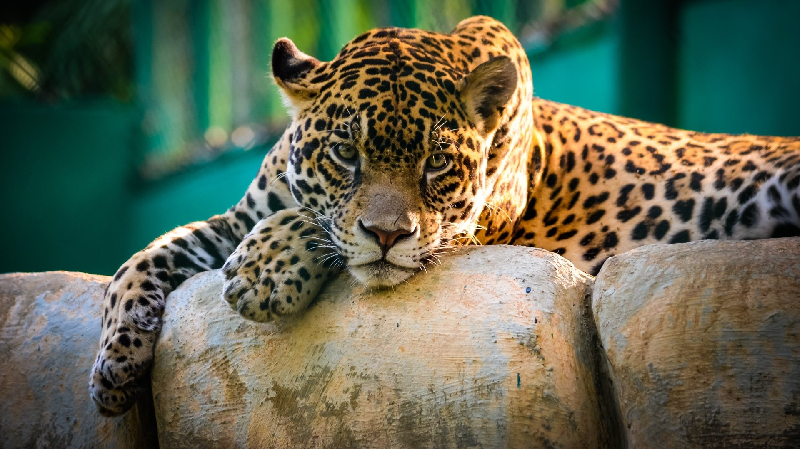
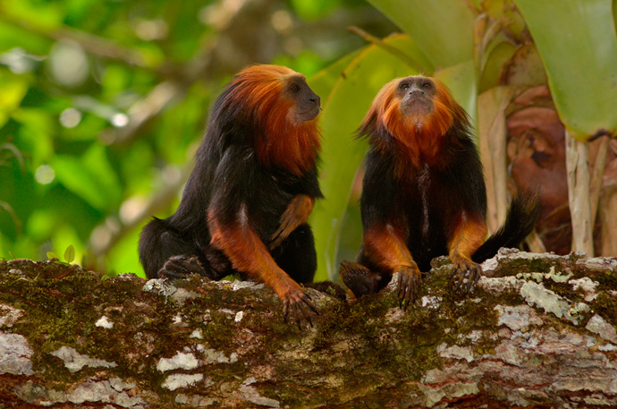
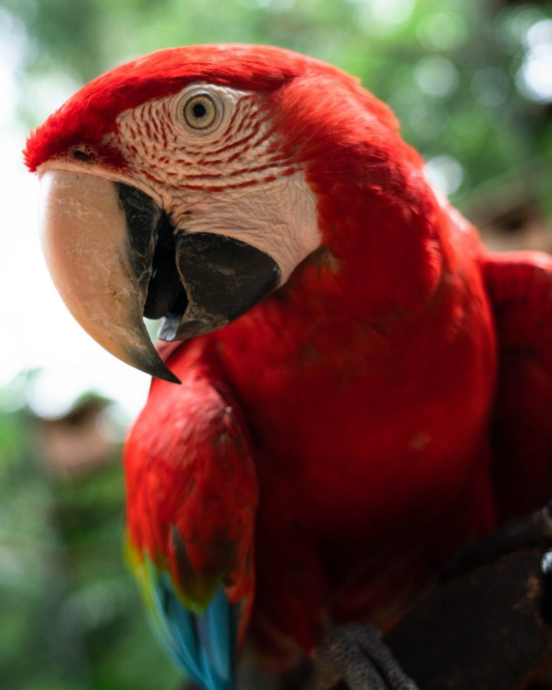
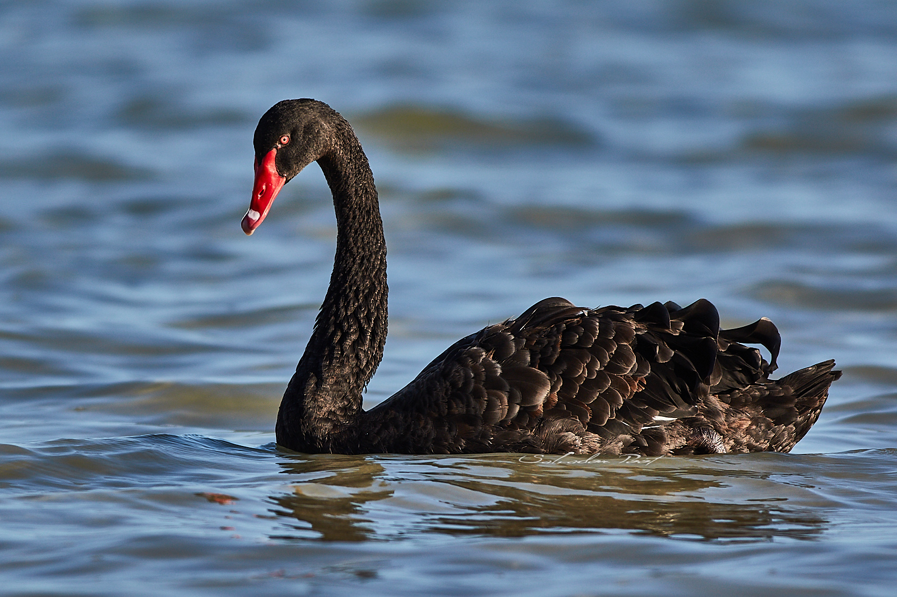
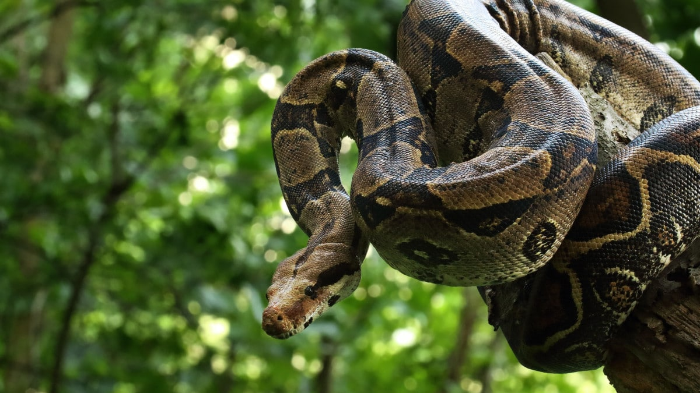
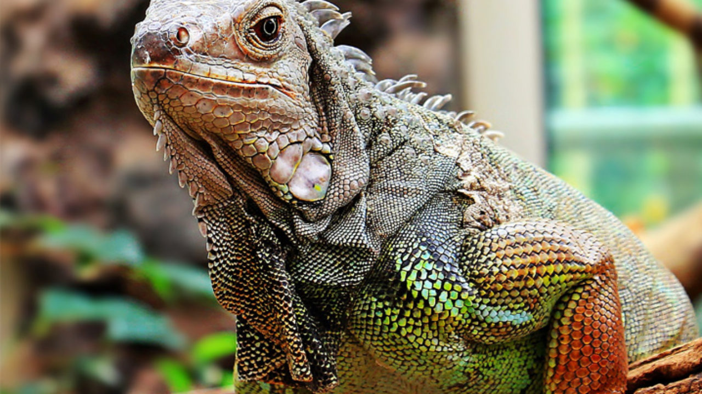

ANIMAIS
MAMÍFEROS
ONÇA PINTADA
Maior felídeo das Américas, ocorre por todo o Brasil, ocupando florestas densas da Amazônia e Mata Atlântica, áreas de Cerrado e Caatinga e o Pantanal. Necessitam grandes áreas com boa quantidade de presas para viver, sendo a redução de habitat e o isolamento ameaças à espécie. Os conflitos devido a predação e os atropelamentos são também fatores de impacto sobre as populações.
MICO LEÃO DA CARA DOURADA
Vive em grupos de até 12 animais, no qual há apenas uma fêmea reprodutora que gera dois filhotes por gestação. Alimenta-se predominantemente de frutos e insetos. Vive cerca de 15 anos. Dorme em oco de árvores. Ocorre no sul da Bahia e nordeste de Minas Gerais. Desmatamentos e comércio ilegal reduziram severamente sua população.
LEÃO

O leão é um mamífero pertencente à ordem Carnivora e família Felidae, sendo conhecido como “rei das selvas”. Ele se alimenta de outros animais, como gnus e zebras, e vive em grupos, que apresentam divisões bem marcadas, sendo o macho responsável pela defesa do grupo e a fêmea pela caça e cuidado com os filhotes.
AVES
ARARA VERMELHA
No Brasil ocorre desde a Amazônia até o oeste do Piauí, Bahia, Minas Gerais, Mato Grosso do Sul e São Paulo. Mede até 90 cm e pesa até 1,5 kg. Os ovos medem cerca de 5 cm, com incubação feita apenas pelas fêmeas em um período de 29 dias. Ameaçada devido ao desmatamento e principalmente a captura de filhotes para o comércio ilegal.
PAPAGAIO VERDADEIRO

O papagaio-verdadeiro (Amazona aestiva) é uma ave pertencente à ordem Psittaciforme e família Psittacidae, cujo gênero Amazona (papagaios) é o mais diverso. Possui asas arredondadas, largas e curtas. Não apresenta dimorfismo sexual de plumagem, sendo predominantemente verde, com cabeça amarela e fronte azul-esverdeada. Mede de 35 a 37 cm de comprimento e pesa cerca de 400g.
CISNE NEGRO
Os cisnes são pássaros do gênero Cygnus, da família Anatidae, tornando-os parentes próximos de patos e gansos. Essas aves aquáticas se originaram no Velho Mundo, e desde então se espalharam por muitas regiões do mundo, reunindo-se em torno de lagos, rios e riachos. Sua aparência distinta é percebida como bastante atraente por muitas pessoas, ganhando das aves um lugar especial no folclore.
RÉPTEIS
JIBOIA
As jiboias são répteis da família Boidae, a família onde se encontram as maiores serpentes do planeta. Ela é considerada a segunda maior espécie do território nacional, ficando atrás apenas da sucuri. Essas serpentes são muito temidas pelo seu grande porte, entretanto, como veremos a seguir, elas não são animais tão perigosos assim.
JABUTI

Os jabutis são répteis pertencentes à Ordem Testudines, da família Testudinidae (como as tartarugas e os cágados) e do gênero Chelonoidis. Na América do Sul, os jabutis são representados por quatro espécies: Chelonoidis chilensis, Chelonoidis nigra, Chelonoidis carbonaria e Chelonoidis denticulata. No Brasil, ocorrem apenas as espécies Chelonoidis carbonária, conhecido como jabuti-vermelho ou jabuti-piranga, e Chelonoidis denticulata (jabuti-amarelo) e, podem ser encontradas em campos abertos e áreas de gramíneas, mas também ocorre dentro de florestas, na Caatinga, no Cerrado, na Amazônia e Mata Atlântica.
IGUANA
"Iguanas são lagartos pertencentes à família Iguanidae. A espécie Iguana iguana é uma das mais populares e conhecida como iguana-verde ou iguana-comum. Ela se alimenta de frutas, folhas e ocasionalmente de alimentos de origem animal, como insetos. É relativamente grande, podendo atingir dois metros de comprimento e ter uma cauda com dois terços do comprimento total de seu corpo. A espécie apresenta hábitos diurnos, é arborícola e ovípara."